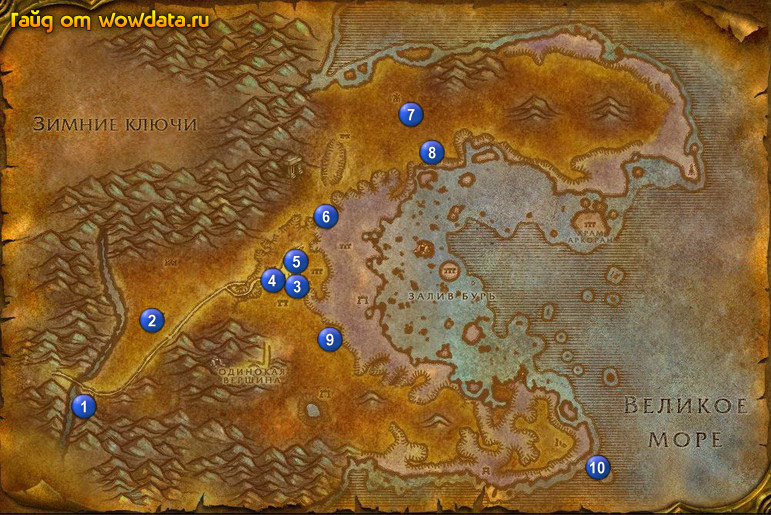

1) Летите в Астранаар, дальше бегите в Азшара, откройте там пункт полета . Но если вы открыли там пункт полета заранее (пыл такой пунктик на 30 лвл) то сразу туда летите.
2) Рядом начните <Духовное беспокойство> и <Земли, полные ненависти> 1 (11, 78).
3) Идите и рядом с лагерем делайте <Духовное беспокойство>.
4) На севере 2 (19, 61) бейте сатиров для <Земли, полные ненависти>.
5) Вернитесь в лагерь и закончите оба квеста.
6) Идите сделайте копии рун 3 (39, 55), 4 (36, 53), 5 (39, 50) для <Чародейские руны>.
7) Закончите <Талисман охотника> 6 (42, 42), начните <Рога и копыта>. (это хантовский квест).
8) Идите на северо-восток и наверху 7 (53, 22) начните <Оскорбленный Ким'джаель>.
9) Южнее 8 (56, 29) делайте <Оскорбленный Ким'джаель>, все квестовые итемы находятся в ящиках, разбросанных по всему лагерю кровавых эльфов. Закончите этот квест 7 (53, 22), начните <"Пропавшее"оборудование Ким'джаеля>.
10) Идите бейте наг в районе 3 4 5 (37, 52) для <"Пропавшее"оборудование Ким'джаеля>.
11) Вернитесь назад 7 (53, 22) и закончите <"Пропавшее"оборудование Ким'джаеля>, теперь вы должны быть 53 лвл или очень – очень близко к нему.
12) Если вы хантер то делайте тут цепь начатую с <Талисман охотника>, причем проигнорируйте последнюю часть.
13) Идите сделайте копию рун 9 (42, 64) для <Чародейские руны>.
14) Идите в угол 10 (78, 91) на платформе используйте [Обычное световое ружье], и ждите пока прилетит самолет, закончите <Чародейские руны>, начните <Возвращение к Тимору>.
15) Вернитесь в Дарнасс.
16) Идите закончите <Изучение рассветницы>.
17) Летите в Астранаар, сделайте его вашим домом и бегите в Оскверненный лес.